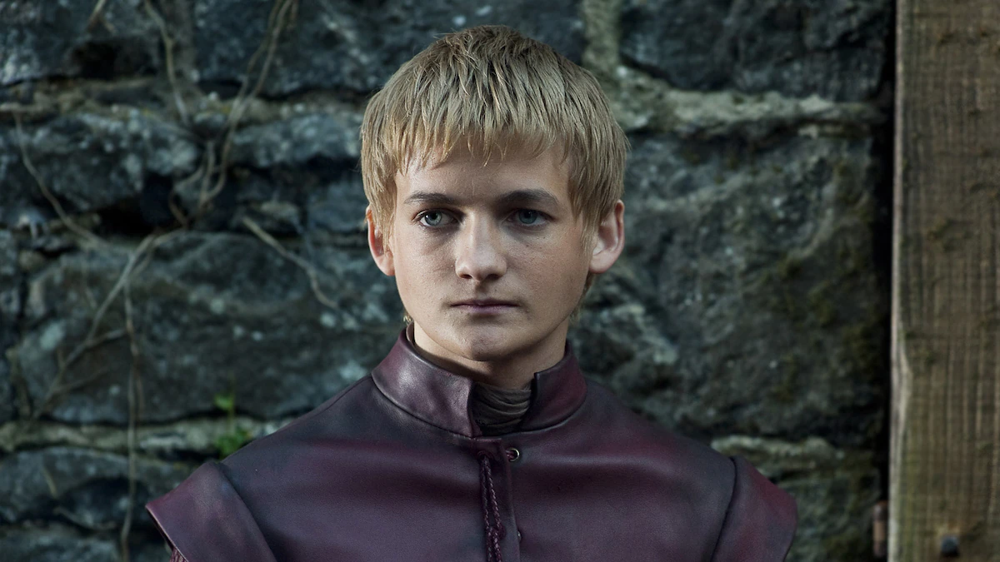
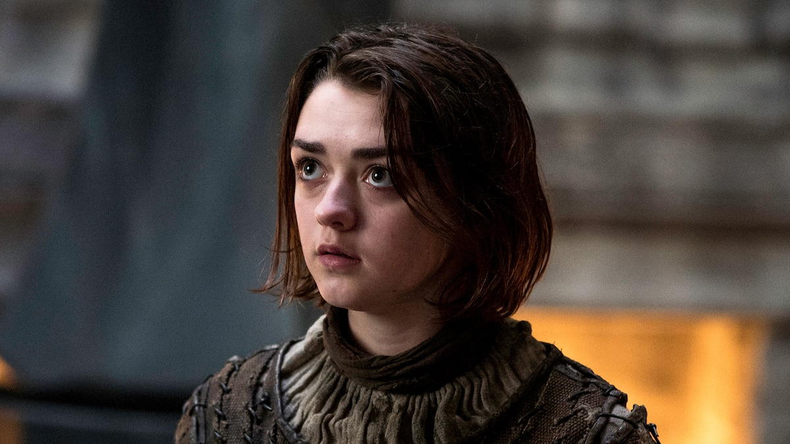

Game of Thrones is a critically acclaimed fantasy drama television
series based on A Song of Ice and Fire, a series of epic fantasy novels
by George R.R. Martin. The show, created by David Benioff and D.B.
Weiss, premiered on HBO in 2011 and quickly became a global phenomenon,
captivating audiences with its intricate storytelling, complex
characters, and breathtaking visuals. Set in the fictional continents of
Westeros and Essos, Game of Thrones revolves around the relentless
struggle for power among noble families, all vying to claim the Iron
Throne and rule the Seven Kingdoms. The series is known for its morally
ambiguous characters, where heroes and villains are often
indistinguishable, and no one is safe from unexpected twists and tragic
fates. The story begins with the Stark family of Winterfell, led by
Eddard "Ned" Stark, who becomes embroiled in political intrigue after
being appointed Hand of the King to Robert Baratheon. As the series
progresses, it expands to include other key players, such as the cunning
Lannisters, the exiled Targaryens seeking to reclaim their throne, and
the Night's Watch, guarding the realm against ancient threats beyond the
Wall.


Jon Snow
Jon Snow is the illegitimate son of Ned Stark, raised at Winterfell.
He joins the Night's Watch and becomes a key figure in the fight
against the White Walkers. Known for his honor and bravery, Jon
eventually learns about his true heritage as a Targaryen.

Daenerys Targaryen
Daenerys Targaryen, also known as the "Mother of Dragons," is the last
surviving member of House Targaryen. Exiled as a child, she rises to
power by freeing slaves and building an army. With her three dragons,
she seeks to reclaim the Iron Throne and restore her family's legacy.
Her journey is marked by both compassion and ruthless determination.

Tyrion Lannister
Tyrion Lannister, often called the "Imp," is the youngest son of Tywin
Lannister. Despite being mocked for his dwarfism, Tyrion is highly
intelligent and witty. He serves as Hand of the Queen to Daenerys
Targaryen and plays a crucial role in the political game.

Cersei Lannister
Queen of the Seven Kingdoms and wife of King Robert. Fiercely
protective of her three children, she also has an unusually tight
connection to her twin brother, Jaime.

Jamie Lannister
Jaime Lannister, also known as the "Kingslayer," is a skilled warrior
and Cersei's twin brother. Initially seen as arrogant, his character
evolves as he struggles with his honor and loyalty. His relationship
with Brienne of Tarth reveals a more compassionate side.

Bran Stark
Bran Stark is the second youngest son of Ned Stark. After a tragic
fall, he becomes the Three-Eyed Raven, gaining the ability to see the
past, present, and future. His journey transforms him into a mystical
figure with a deep understanding of the world's history.

Joffrey Baratheon
Joffrey Baratheon is the cruel and sadistic king of the Seven
Kingdoms. As the supposed son of Robert Baratheon, he rules with
tyranny and enjoys tormenting others. His actions often lead to chaos,
making him one of the most hated characters in the series.

Arya Stark
Arya Stark is the youngest daughter of Ned Stark, known for her fierce
independence and determination. Trained as a Faceless Man, she becomes
a skilled assassin. Arya's quest for revenge against those who wronged
her family defines her character.